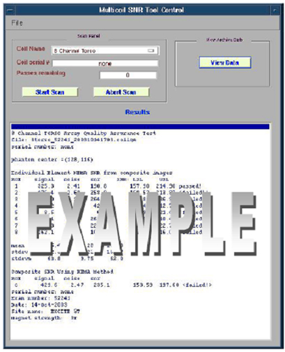

- 00000018WIA302ADD20GYZ
- id_131061223.1
- Feb 19, 2025 6:05:05 AM
Surface Coils SNR Test
Prerequisites
| Personnel requirements | |||
|---|---|---|---|
| Required persons | Preliminary requirements | Procedure | Finalization |
| 1 | - | 30 minutes | - |
About this task
Procedure
- Select the coil type you want to run, then select Start Scan. See Coil SNR tool. This illustration shows an example using the 8 channel Torso coil.
Figure 1. Coil SNR tool 
- When the scan completes, the SNR data will be displayed in the Multicoil SNR Tool Control window. Each ROI returns an individual result with a pass or fail indication. See SNR Results. The results are automatically recorded as files in /usr/g/service/data. Please refer to this directory for a history of functional tests performed on a specific system. The individual receiver images and composite image are saved in the system. The signals used to calculate SNR are taken from the composite image. Signal images are acquired using a SE sequence with CV saveinter set to 1 to save intermediate images into the image database.
Figure 2. SNR Results 
Figure 3. Example Individual Receiver Images And Composite Image For CTL Coil 
- To view the most recent plot data again or previous results, click on view data. The following GUI will appear. See View Data.
Figure 5. View Data 
- To recalculate the most recent exam SNR results, enter the correct exam numer in the Exam Field under the Mulitcoil SNR display control GUI, then click the Calculate SNR button. SeeSNR plot data and SNR value data.
Figure 6. SNR plot data Figure 7. SNR value data